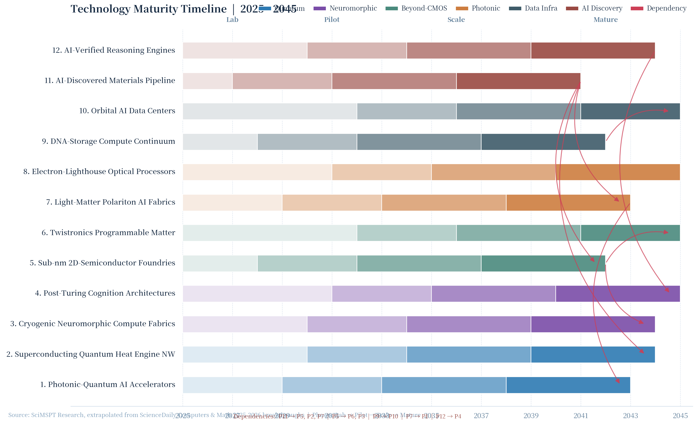

All 12 projects projected across four phases: Lab → Pilot → Scale → Mature. Critical path dependencies marked with red arrows.

Figure: Phase boundaries reflect demonstrated lab results, projected commercial deployment, scaling inflection, and infrastructure maturity. Red arrows show critical-path dependencies (e.g. P11 → P5, P5 → P6, P9 → P10).